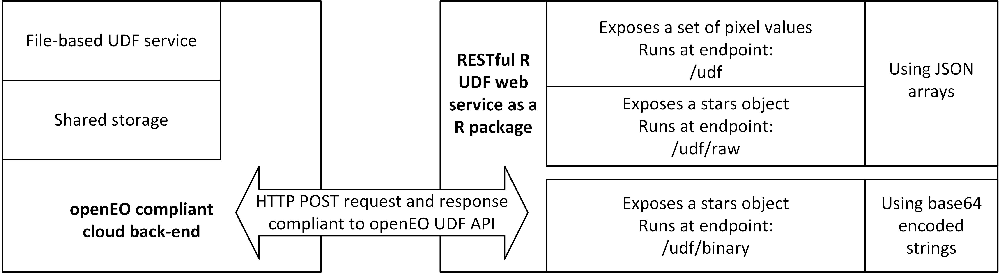
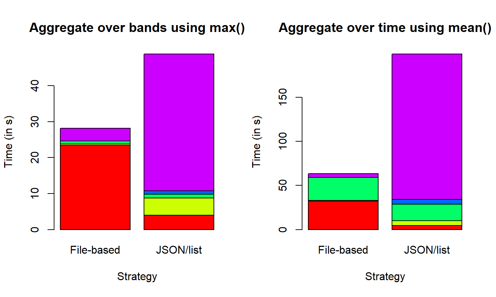

Introduction
This repository contains a R package for implementing the concept of User-Defined Functions for processing Earth Observation (EO) data in cloud backends. This will allow users to run their custom code written in R to be executed on EO data such as satellite imageries with the help of processing backends conforming to the openEO API. The openEO API is being developed as part of the project “openEO”.
Background
This repository is meant to be part of the H2020 funded project openEO. The objective of this project is to develop an uniform API to allow processing of Earth Observation (EO) data in cloud-based processing backends from various client nodes. In this API framework, User-Defined Functions (UDFs) is a concept that would allow users to run their own scripts on EO data in these cloud backends.
User-Defined Functions
The UDFs are implemented by developing an UDF API which work hand-in-hand with the openEO core API. The main idea is that there are UDF (web-) services which could be used by the backends as required. The typical workflow is:
- The user uploads his/her script from the client nodes to the backends along with the process graph
- The backend executes the process graph and encounters the UDF in the process graph
- The backend seeks the services of the UDF service to execute the user’s script and sends the script and intermediate data to the service through appropriate means (file-based service, RESTful web-service etc.)
- The UDF service executes the script on the data and sends the result back to the backend.
- The backend receives the data and continues executing the process graph until the final result is obtained.
- The backend sends the completed result to the user’s client node.
These UDF service is being developed for two different languages - Python and R. This repository concerns with the implementation using R.
Architecture

In the openEO API, the different clients interact with the different backends through the openEO API which acts as a common language understood by both the clients and the backends. The UDF service is not accessible to the clients directly but only through the backends and hence the UDF service’s internal operations are abstracted to the user.
Installation
Dependencies
This R package has the following dependencies * stars * jsonlite * plumber * raster * base64enc * zip
These can be installed by running the following:
install.packages(c("stars", "jsonlite", "plumber", "raster", "base64enc", "zip"), dependencies = TRUE)
Installing openEO.R.UDF
This package can then be installed using
install_github("Open-EO/openeo-r-udf")Using Docker
Docker provides a virtual containerized environment for running software. In order to install this R package in a Docker environment, please follow these steps:
- Install Docker on your machine. The installation instructions vary according to the Operating System. Detailed instructions for all common Operating Systems may be found here: https://docs.docker.com/install/.
-
Make sure that Docker has been installed correctly using the following command. Details on containers and Docker version will be shown.
docker info -
Test whether installation using Docker is working correctly. A hello message should be printed on screen.
docker run hello-world -
Run it using the following command. If this image is not present on the local machine, it will be pulled from Docker Hub.
docker run -p 5384:8010 pramitghosh/openeo.r.udfIn the above command,
-pre-routes the port where the service will be available. In the Docker image itself, this is available on port 8010. It can be mapped to any port of choice on the host (here it is mapped to port 5384). Instead of running, the image can be pulled from Docker Hub usingdocker pull pramitghosh/openeo.r.udfBuilding it locally
Once the source files are present on the local machine, running the following command (after navigating to the directory this repository is stored locally) builds a Docker image
docker build -t openeo-r-udf -f DOCKERFILE .
For using base64 encoded string
One of the strategies used involve transmission of data to and from the backend through HTTP POST requests in the form of base64 encoded strings representing a ZIP file containing generic GeoTIFFs embedded in a JSON. Please use the Docker container pramitghosh/openeo.r.udf:wbin on Docker Hub to use it. Currently, it is not possible to run it manually without encountering segmentation fault due to a long-standing issue in one of the dependencies of this package.
Usage
This package is intended to be used as part of the openEO API. The package works along with the different backends and are not supposed to accessible directly by the client. However, for testing, please refer to the the Wiki pages of this repository here.
Strategies
This R package has implemented 4 strategies for the R UDF service. All of these involve converting the incoming data to a stars object before applying the UDF function. An overview of these strategies is shown in the figure below.

-
Strategy 1 implements the R UDF service as a part of the back-end with data being transmitted as binary GeoTIFF files along with a CSV file acting as a look-up table containing information on which image corresponds to which time, band etc. along with some additional information. These are converted to a
starsobject and exposed to the UDF as a list. -
Strategy 2A implements the R UDF service according to Soeren’s JSON schema. Backends send a POST request to a REST endpoint
/udfwith a body containing pixel values in nested JSON arrays. These are converted to astarsobject and exposed to the UDF as a list. -
Strategy 2B also implements the R UDF service according to the same JSON schema as Strategy 2A, but instead of exposing the converted
starsobject as a list, it exposes it as it is. This runs at the endpoint/udf/raw -
Strategy 3 implements a REST endpoint at
/udf/binaryand exposes astarsobject in a manner similar to Strategy 2B. In this strategy, the EO data in the form of GeoTIFF files are compressed into a ZIP file and its base64 encoded string representation is sent to the UDF service by the backend embedding it as a JSON in the POST body. The POST body also contains a look-up table, similar to Strategy 1, but in the form of JSON arrays.
Performance
Out of the strategies mentioned above, Strategy 1 is ultimately trivial since it does not offer a RESTful API. Therefore, although, faster than some of the other implementations, it is not practical in the context of openEO. Strategy 2A offers a REST interface, but as it exposes only a list of numbers (representing pixel values) to the UDF, the functionality of this strategy is limited to simple operations (e.g. aggregation over time, band etc.), similar to Strategy 1.
Strategy 2B exposes the whole stars object to the UDF, but as the EO data has to converted from ASCII JSON arrays from the incoming POST request to binary objects and reconverted to JSON arrays from binary objects while sending the response back, it is rather slow. Strategy 3 overcomes this limitation by sending the data as a base64 encoded string representing binary GeoTIFF files and offers a much faster turnaround time for running an UDF. Furthermore, this strategy allows users to install and use any R package (from Github, CRAN etc.) in his/her UDF and also load data from online sources, therefore allowing a lot of freedom and flexibility for the user. Now, auxilliary data in the form of files/directories can also be passed from the backend to the UDF service (for Strategy 3 only) by putting the data in a directory named /data in the ZIP file that is passed on as a base64 encoded string. These files are made available to the UDF script locally (in the same working directory).
Here are some test results for operations on a timeseries (3 timesteps with a temporal resolution of ~10 days) of spatially subsetted (300*300px) Sentinel-2 images containing 13 bands each illustrating the performance.
Aggregation over bands (using max()) and time (using mean()) using Strategy 1 and 2A 
Reprojection (using stars::st_warp()) and Unsupervised Classification (using RStoolbox::unsuperClass()) using Strategy 2B and 3 

Further details regarding these strategies and their implementations may be found on these slides and in Ghosh et al., 2018.
Testing
Examples of HTTP POST bodies (as JSONs) for strategies 2A, 2B and 3 can be found in pramitghosh/openeo-r-udf-examples. Manuals on how to do that is available on the Wiki.